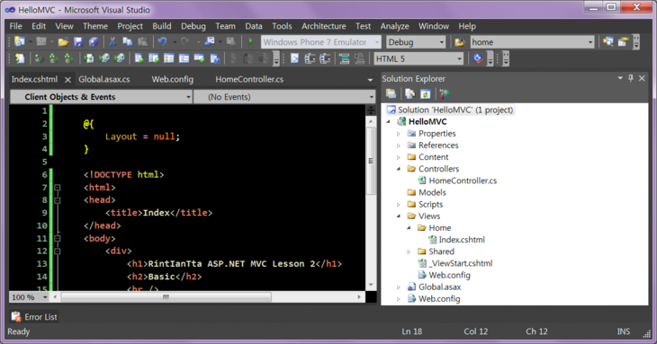
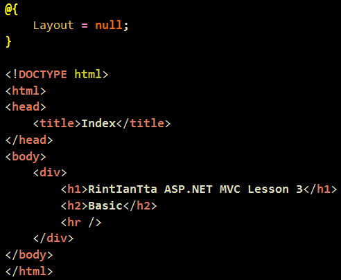
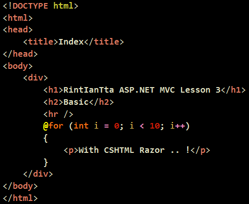
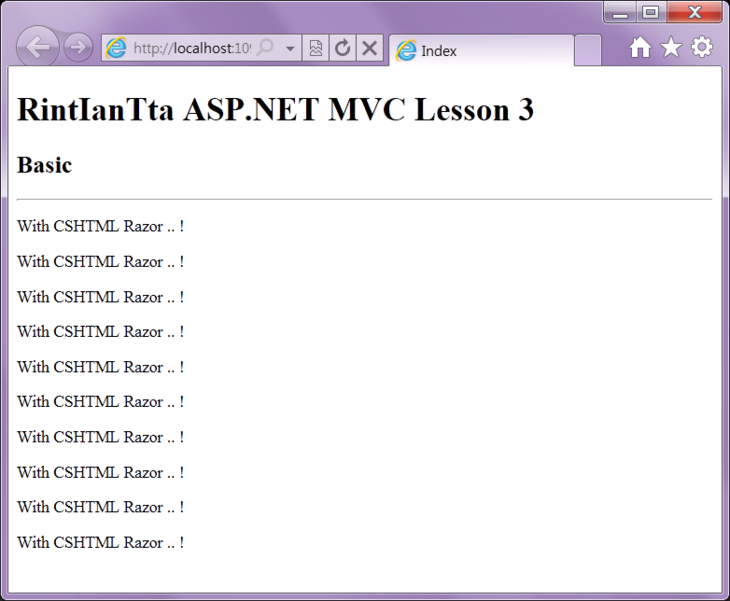
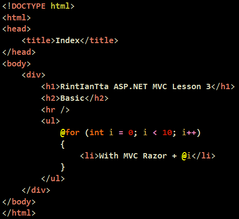
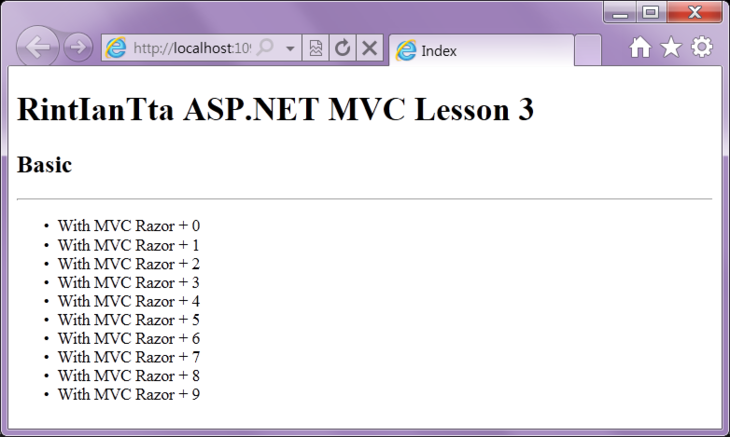
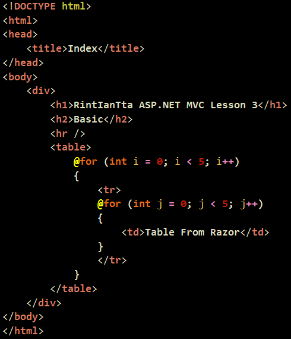

이녀석의 파일명이 바로 CSHTML 이랍니다.
일단 위에 있는 녀석은 집어 치워보도록 하구요 ㅇㅁㅇ

간단히 살펴보도록 합시다.
CShtml 에서 가장 중요한 요소는 바로 『@』골뱅이랍니다. ㅇㅁㅇ
소스를 쓸때 @를 사용하게 되지요.
원래 <%%>를 쓰던 것에 비해
소스가 상당히 간단하고 아름답게 구성이 된답니다.
다음 소스에서 반복을 10번 돌리면,
『With CSHTML Razor .. !』 라는 글이 10번 반복이 된답니다.

결과입니다.

그리고 다음과 같이 태그 내부에서 또 사용할 수 있습니다.

숫자가 출력되겠지요 .. ?!
어디를 어떻게 써야하고 그런 것은 쓰다보면 익혀질 수 있답니다..!
뭐, 소스내에서 글자색이 다르니 혼자 열심히 연구하시면
금방 자유자재로 사용하실 수 있답니다.

테이블도 다음과 같은 식으로 만들 수 있겠지요 .. ?!
이거 마음껏 하실 수 있으시면 cshtml의 반복문을 거의 자유자재로 쓸 수 있다고 생각하시면 된답니다..!
